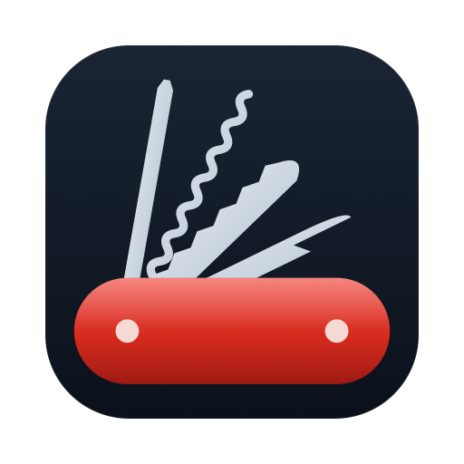

Politique de confidentialité
Privacy policy
Política de privacidad
Política de privacidade
Privacybeleid
Datenschutzerklärung
Informativa sulla privacy
Application Canif · dernière mise à jour : 6 novembre 2026 · Page d'accueil
Canif app · last updated: November 6, 2026 · Home page
App Canif · última actualización: 6 de noviembre de 2026 · Página de inicio
App Canif · última atualização: 6 de novembro de 2026 · Página inicial
App Canif · laatst bijgewerkt: 6 november 2026 · Startpagina
App Canif · zuletzt aktualisiert: 6. November 2026 · Startseite
App Canif · ultimo aggiornamento: 6 novembre 2026 · Pagina iniziale
L’encoche affiche uniquement les notifications de Canif. Les objets ponctuels restent en mémoire pour la session ; les alertes et suivis web déjà enregistrés restent sur votre Mac. Canif ne lit pas les notifications des autres apps et ne transmet pas leur contenu.
Canif pour Mac
En une phrase
Canif travaille sur votre Mac. Pas de compte, pas de publicité. Le développeur ne voit rien de ce que vous faites et reçoit seulement des statistiques anonymes, que vous pouvez couper en décochant « Aider à améliorer Canif ».
Ce à quoi Canif accède, et pourquoi
- Accessibilité : pour ranger les fenêtres, afficher l'aperçu du Dock et faire le couper-coller dans le Finder.
- Surveillance de l'entrée : pour reconnaître le raccourci de la dictée et ⌘X / ⌘V. Canif ne garde ni n'envoie ce que vous tapez.
- Micro : pour la dictée. La voix est transcrite sur le Mac lui-même ; aucun son n'est enregistré ni envoyé.
- Enregistrement de l'écran : pour les miniatures des fenêtres dans l'aperçu du Dock. Les images restent en mémoire et ne sont jamais enregistrées.
- Localisation : uniquement parce que macOS l'exige pour lire le nom du réseau WiFi. Canif ne lit ni ne garde votre position.
- Calendrier : pour montrer les événements du jour dans l'aperçu du Dock. Rien ne quitte le Mac.
- Réseau local : pour découvrir les appareils et leurs services. Les noms, MAC, pièces et historiques sont conservés sur votre Mac. Sur macOS 27, l’assistant administrateur lit la table des voisins pour obtenir les MAC.
Quand Canif se connecte à internet
- Dictée : pour télécharger le modèle de reconnaissance vocale chez Hugging Face, la première fois, puis vérifier une fois par jour s'il existe une version plus récente.
- DNS : pour mesurer la rapidité des serveurs DNS, quand vous le demandez.
- Alertes web : pour relire les pages que vous avez choisi de surveiller, et seulement celles-là.
- Nous écrire : le message part depuis votre propre app Mail, et seulement si vous cliquez sur Envoyer.
- Retouche par IA de la dictée (désactivée au départ) : si vous choisissez un service en ligne (OpenAI, Anthropic, Groq…), le texte dicté lui est envoyé avec votre propre clé pour être corrigé. Avec Apple Intelligence, tout reste sur le Mac.
- Aperçu du Dock : la pochette du morceau en cours de Spotify est lue sur les serveurs de Spotify.
- Statistiques anonymes (activées au départ, à couper dans Accueil › Confidentialité) : outils activés, écrans ouverts, version de Canif et de macOS, langue. Envoyées à TelemetryDeck (Allemagne) avec un identifiant aléatoire haché. Jamais votre nom, votre e-mail, vos réseaux, vos pages, vos dictées ni vos fichiers.
- Fingerbank (facultatif, désactivé par défaut) : si vous activez cette identification avec votre propre clé, l’adresse MAC et le nom d’hôte des appareils à identifier sont envoyés à api.fingerbank.org. La clé reste dans le Trousseau de macOS.
Contact
Une question : Xavier Roubaud, xavier.roubaud@gmail.com.
The notch only displays Canif’s own notifications. One-off subjects remain in memory for the session; existing saved alerts and web watches stay on your Mac. Canif does not read other apps’ notifications or transmit notification content.
Canif for Mac
In one sentence
Canif works on your Mac. No account, no ads. The developer sees nothing of what you do and only receives anonymous statistics, which you can turn off with “Help improve Canif”.
What Canif accesses, and why
- Accessibility: to snap windows, show the Dock preview and cut and paste in the Finder.
- Input Monitoring: to recognise the dictation shortcut and ⌘X / ⌘V. Canif neither keeps nor sends what you type.
- Microphone: for dictation. Speech is transcribed on the Mac itself; no audio is recorded or sent.
- Screen Recording: for window thumbnails in the Dock preview. Images stay in memory and are never saved.
- Location: only because macOS requires it to read the WiFi network name. Canif neither reads nor keeps your position.
- Calendar: to show today's events in the Dock preview. Nothing leaves the Mac.
- Local network: to discover devices and their services. Names, MAC addresses, rooms and history are stored on your Mac. On macOS 27, the administrator helper reads the neighbour table to obtain MAC addresses.
When Canif goes online
- Dictation: to download the speech model from Hugging Face the first time, then check once a day for a newer version.
- DNS: to measure DNS server speed, when you ask for it.
- Web alerts: to reload the pages you chose to watch, and only those.
- Contact us: the message is sent from your own Mail app, and only if you click Send.
- AI touch-up for dictation (off by default): if you pick an online service (OpenAI, Anthropic, Groq…), the dictated text is sent to it with your own key to be corrected. With Apple Intelligence, everything stays on the Mac.
- Dock preview: the artwork of the Spotify track playing is loaded from Spotify's servers.
- Anonymous statistics (on by default, turn off in Home › Privacy): tools turned on, screens opened, Canif and macOS versions, language. Sent to TelemetryDeck (Germany) with a hashed random identifier. Never your name, email, networks, pages, dictations or files.
- Fingerbank (optional, off by default): if you enable this identification with your own key, the MAC address and hostname of devices to identify are sent to api.fingerbank.org. The key is stored in the macOS Keychain.
Contact
Any question: Xavier Roubaud, xavier.roubaud@gmail.com.
La muesca solo muestra notificaciones de Canif. Los asuntos puntuales permanecen en memoria durante la sesión; las alertas y los seguimientos web guardados permanecen en su Mac. Canif no lee notificaciones de otras apps ni transmite su contenido.
Canif para Mac
En una frase
Canif trabaja en tu Mac. Sin cuenta, sin publicidad. El desarrollador no ve nada de lo que haces y solo recibe estadísticas anónimas, que se pueden desactivar en «Ayudar a mejorar Canif».
A qué accede Canif y por qué
- Accesibilidad: para colocar ventanas, mostrar la vista previa del Dock y cortar y pegar en el Finder.
- Monitorización de entrada: para reconocer el atajo del dictado y ⌘X / ⌘V. Canif no guarda ni envía lo que escribes.
- Micrófono: para el dictado. La voz se transcribe en el propio Mac; no se graba ni se envía ningún sonido.
- Grabación de pantalla: para las miniaturas de las ventanas en la vista previa del Dock. Las imágenes se quedan en la memoria y nunca se guardan.
- Localización: solo porque macOS la exige para leer el nombre de la red wifi. Canif no lee ni guarda tu ubicación.
- Calendario: para mostrar los eventos del día en la vista previa del Dock. Nada sale del Mac.
- Red local: para descubrir dispositivos y sus servicios. Los nombres, las MAC, las habitaciones y el historial se guardan en su Mac. En macOS 27, el asistente administrador lee la tabla de vecinos para obtener las MAC.
Cuándo se conecta Canif a internet
- Dictado: para descargar el modelo de reconocimiento de voz de Hugging Face la primera vez y después comprobar una vez al día si hay una versión más reciente.
- DNS: para medir la rapidez de los servidores DNS, cuando tú lo pides.
- Alertas web: para volver a cargar las páginas que has elegido vigilar, y solo esas.
- Escríbanos: el mensaje sale desde tu propia app Mail, y solo si haces clic en Enviar.
- Retoque con IA del dictado (desactivado de serie): si eliges un servicio en línea (OpenAI, Anthropic, Groq…), se le envía el texto dictado con tu propia clave para corregirlo. Con Apple Intelligence, todo se queda en el Mac.
- Vista previa del Dock: la portada de la canción que suena en Spotify se carga desde los servidores de Spotify.
- Estadísticas anónimas (activadas de serie, se desactivan en Inicio › Privacidad): herramientas activadas, pantallas abiertas, versión de Canif y de macOS, idioma. Se envían a TelemetryDeck (Alemania) con un identificador aleatorio cifrado (hash). Nunca tu nombre, tu correo, tus redes, tus páginas, tus dictados ni tus archivos.
- Fingerbank (opcional, desactivado por defecto): si activa esta identificación con su propia clave, la dirección MAC y el nombre de host de los dispositivos por identificar se envían a api.fingerbank.org. La clave se guarda en el Llavero de macOS.
Contacto
¿Alguna pregunta? Xavier Roubaud, xavier.roubaud@gmail.com.
O entalhe mostra apenas notificações do Canif. Os assuntos pontuais ficam na memória durante a sessão; os alertas e acompanhamentos da web salvos ficam no seu Mac. O Canif não lê notificações de outros apps nem transmite o conteúdo das notificações.
Canif para Mac
Em uma frase
O Canif funciona no seu Mac. Sem conta, sem anúncios. O desenvolvedor não vê nada do que você faz e só recebe estatísticas anônimas, que você pode desativar em “Ajudar a melhorar o Canif”.
O que o Canif acessa e por quê
- Acessibilidade: para organizar janelas, mostrar a prévia do Dock e recortar e colar no Finder.
- Monitoramento de Entrada: para reconhecer o atalho do ditado e ⌘X / ⌘V. O Canif não guarda nem envia o que você digita.
- Microfone: para o ditado. A voz é transcrita no próprio Mac; nenhum som é gravado ou enviado.
- Gravação de Tela: para as miniaturas das janelas na prévia do Dock. As imagens ficam na memória e nunca são salvas.
- Localização: só porque o macOS exige isso para ler o nome da rede Wi-Fi. O Canif não lê nem guarda a sua localização.
- Calendário: para mostrar os eventos do dia na prévia do Dock. Nada sai do Mac.
- Rede local: para descobrir dispositivos e seus serviços. Nomes, endereços MAC, cômodos e histórico ficam no seu Mac. No macOS 27, o assistente administrador lê a tabela de vizinhos para obter os endereços MAC.
Quando o Canif se conecta à internet
- Ditado: para baixar o modelo de reconhecimento de voz do Hugging Face na primeira vez e depois verificar uma vez por dia se há uma versão mais recente.
- DNS: para medir a velocidade dos servidores DNS, quando você pede.
- Alertas web: para recarregar as páginas que você escolheu acompanhar, e somente elas.
- Fale conosco: a mensagem sai do seu próprio app Mail, e só se você clicar em Enviar.
- Revisão por IA do ditado (desativada por padrão): se você escolher um serviço on-line (OpenAI, Anthropic, Groq…), o texto ditado é enviado a ele com a sua própria chave para ser corrigido. Com a Apple Intelligence, tudo fica no Mac.
- Prévia do Dock: a capa da música tocando no Spotify é carregada dos servidores do Spotify.
- Estatísticas anônimas (ativadas por padrão, desative em Início › Privacidade): ferramentas ativadas, telas abertas, versão do Canif e do macOS, idioma. Enviadas à TelemetryDeck (Alemanha) com um identificador aleatório criptografado (hash). Nunca o seu nome, e-mail, redes, páginas, ditados ou arquivos.
- Fingerbank (opcional, desativado por padrão): se você ativar a identificação com sua própria chave, o endereço MAC e o nome de host dos dispositivos a identificar serão enviados a api.fingerbank.org. A chave fica nas Chaves do macOS.
Contato
Alguma dúvida? Xavier Roubaud, xavier.roubaud@gmail.com.
De inkeping toont alleen meldingen van Canif. Eenmalige onderwerpen blijven voor de sessie in het geheugen; opgeslagen waarschuwingen en webcontroles blijven op uw Mac. Canif leest geen meldingen van andere apps en verzendt geen meldingsinhoud.
Canif voor Mac
In één zin
Canif werkt op je Mac. Geen account, geen reclame. De ontwikkelaar ziet niets van wat je doet en ontvangt alleen anonieme statistieken, die u kunt uitzetten met ‘Help Canif te verbeteren’.
Waar Canif toegang toe heeft, en waarom
- Toegankelijkheid: om vensters te ordenen, de Dock-voorvertoning te tonen en te knippen en plakken in de Finder.
- Invoermonitoring: om de sneltoets voor dicteren en ⌘X / ⌘V te herkennen. Canif bewaart of verstuurt niet wat je typt.
- Microfoon: voor dicteren. Je stem wordt op de Mac zelf omgezet in tekst; er wordt geen geluid opgenomen of verstuurd.
- Schermopname: voor de miniaturen van vensters in de Dock-voorvertoning. De beelden blijven in het geheugen en worden nooit bewaard.
- Locatie: alleen omdat macOS dit eist om de naam van het wifinetwerk te lezen. Canif leest of bewaart je locatie niet.
- Agenda: om de activiteiten van vandaag te tonen in de Dock-voorvertoning. Niets verlaat de Mac.
- Lokaal netwerk: om apparaten en hun diensten te ontdekken. Namen, MAC-adressen, kamers en geschiedenis blijven op uw Mac. Op macOS 27 leest de beheerdershelper de burentabel om MAC-adressen op te halen.
Wanneer Canif verbinding maakt met internet
- Dicteren: om de eerste keer het spraakherkenningsmodel te downloaden van Hugging Face, en daarna één keer per dag te kijken of er een nieuwere versie is.
- DNS: om de snelheid van DNS-servers te meten, als je daarom vraagt.
- Webmeldingen: om de pagina's die je wilt volgen opnieuw te laden, en alleen die.
- Schrijf ons: het bericht gaat via je eigen Mail-app, en alleen als je op Verstuur klikt.
- AI-correctie van dicteren (standaard uit): als je een onlinedienst kiest (OpenAI, Anthropic, Groq…), wordt de gedicteerde tekst met je eigen sleutel naar die dienst gestuurd om te worden verbeterd. Met Apple Intelligence blijft alles op de Mac.
- Dock-voorvertoning: de albumhoes van het nummer dat in Spotify speelt, wordt geladen van de servers van Spotify.
- Anonieme statistieken (standaard aan, uit te zetten in Start › Privacy): ingeschakelde tools, geopende schermen, versie van Canif en macOS, taal. Verstuurd naar TelemetryDeck (Duitsland) met een gehasht willekeurig ID. Nooit je naam, e-mail, netwerken, pagina's, dictaten of bestanden.
- Fingerbank (optioneel, standaard uit): als u deze herkenning met uw eigen sleutel inschakelt, worden het MAC-adres en de hostnaam van te herkennen apparaten naar api.fingerbank.org gestuurd. De sleutel wordt in de macOS-sleutelhanger bewaard.
Contact
Een vraag? Xavier Roubaud, xavier.roubaud@gmail.com.
Die Aussparung zeigt nur Canif-Mitteilungen. Einzelne Betreffzeilen bleiben für die Sitzung im Arbeitsspeicher; gespeicherte Warnungen und Webbeobachtungen bleiben auf Ihrem Mac. Canif liest keine Mitteilungen anderer Apps und überträgt keine Mitteilungsinhalte.
Canif für Mac
In einem Satz
Canif arbeitet auf Ihrem Mac. Kein Konto, keine Werbung. Der Entwickler sieht nichts von dem, was Sie tun, und erhält nur anonyme Statistiken, die Sie mit „Canif verbessern helfen“ ausschalten können.
Worauf Canif zugreift und warum
- Bedienungshilfen: um Fenster anzuordnen, die Dock-Vorschau anzuzeigen und im Finder auszuschneiden und einzufügen.
- Eingabeüberwachung: um den Kurzbefehl für das Diktat und ⌘X / ⌘V zu erkennen. Canif speichert und sendet nicht, was Sie tippen.
- Mikrofon: für das Diktat. Die Sprache wird auf dem Mac selbst in Text umgewandelt; es wird kein Ton aufgenommen oder gesendet.
- Bildschirmaufnahme: für die Fenster-Miniaturen in der Dock-Vorschau. Die Bilder bleiben im Arbeitsspeicher und werden nie gesichert.
- Ortungsdienste: nur weil macOS sie verlangt, um den Namen des WLAN-Netzwerks zu lesen. Canif liest und speichert Ihren Standort nicht.
- Kalender: um die heutigen Termine in der Dock-Vorschau zu zeigen. Nichts verlässt den Mac.
- Lokales Netzwerk: zum Erkennen von Geräten und deren Diensten. Namen, MAC-Adressen, Räume und Verlauf bleiben auf Ihrem Mac. Unter macOS 27 liest der Administratorhelfer die Nachbartabelle, um MAC-Adressen zu ermitteln.
Wann Canif ins Internet geht
- Diktat: um beim ersten Mal das Spracherkennungsmodell von Hugging Face zu laden und danach einmal am Tag nach einer neueren Version zu sehen.
- DNS: um die Geschwindigkeit von DNS-Servern zu messen, wenn Sie es wünschen.
- Web-Alarme: um die Seiten neu zu laden, die Sie beobachten möchten, und nur diese.
- Schreiben Sie uns: Die Nachricht wird über Ihre eigene Mail-App gesendet, und nur wenn Sie auf „Senden“ klicken.
- KI-Überarbeitung des Diktats (anfangs aus): Wenn Sie einen Onlinedienst wählen (OpenAI, Anthropic, Groq …), wird der diktierte Text mit Ihrem eigenen Schlüssel an ihn gesendet, um ihn zu korrigieren. Mit Apple Intelligence bleibt alles auf dem Mac.
- Dock-Vorschau: Das Cover des Titels, der in Spotify läuft, wird von den Servern von Spotify geladen.
- Anonyme Statistiken (anfangs an, ausschaltbar unter Start › Datenschutz): eingeschaltete Werkzeuge, geöffnete Bereiche, Version von Canif und macOS, Sprache. Gesendet an TelemetryDeck (Deutschland) mit einer gehashten Zufallskennung. Niemals Ihr Name, Ihre E-Mail-Adresse, Ihre Netzwerke, Seiten, Diktate oder Dateien.
- Fingerbank (optional, standardmäßig aus): Wenn Sie die Erkennung mit Ihrem eigenen Schlüssel aktivieren, werden MAC-Adresse und Hostname der zu erkennenden Geräte an api.fingerbank.org gesendet. Der Schlüssel bleibt im macOS-Schlüsselbund.
Kontakt
Eine Frage? Xavier Roubaud, xavier.roubaud@gmail.com.
La tacca mostra solo le notifiche di Canif. Gli oggetti singoli restano in memoria per la sessione; gli avvisi e i controlli web salvati restano sul tuo Mac. Canif non legge le notifiche delle altre app e non ne trasmette il contenuto.
Canif per Mac
In una frase
Canif lavora sul tuo Mac. Nessun account, nessuna pubblicità. Lo sviluppatore non vede nulla di ciò che fai e riceve solo statistiche anonime, che puoi disattivare con “Aiuta a migliorare Canif”.
A cosa accede Canif, e perché
- Accessibilità: per sistemare le finestre, mostrare l'anteprima del Dock e fare taglia e incolla nel Finder.
- Monitoraggio input: per riconoscere l'abbreviazione della dettatura e ⌘X / ⌘V. Canif non conserva né invia ciò che digiti.
- Microfono: per la dettatura. La voce viene trascritta sul Mac stesso; nessun suono viene registrato o inviato.
- Registrazione schermo: per le miniature delle finestre nell'anteprima del Dock. Le immagini restano in memoria e non vengono mai salvate.
- Localizzazione: solo perché macOS la richiede per leggere il nome della rete Wi-Fi. Canif non legge né conserva la tua posizione.
- Calendario: per mostrare gli eventi del giorno nell'anteprima del Dock. Nulla lascia il Mac.
- Rete locale: per scoprire dispositivi e servizi. Nomi, indirizzi MAC, stanze e cronologia restano sul tuo Mac. Su macOS 27, l’assistente amministratore legge la tabella dei vicini per ottenere gli indirizzi MAC.
Quando Canif si collega a internet
- Dettatura: per scaricare il modello di riconoscimento vocale da Hugging Face la prima volta, poi controllare una volta al giorno se esiste una versione più recente.
- DNS: per misurare la velocità dei server DNS, quando lo chiedi tu.
- Avvisi web: per ricaricare le pagine che hai scelto di tenere d'occhio, e solo quelle.
- Scrivici: il messaggio parte dalla tua app Mail, e solo se fai clic su Invia.
- Ritocco con IA della dettatura (disattivato all'inizio): se scegli un servizio online (OpenAI, Anthropic, Groq…), il testo dettato gli viene inviato con la tua chiave per essere corretto. Con Apple Intelligence, tutto resta sul Mac.
- Anteprima del Dock: la copertina del brano in riproduzione su Spotify viene caricata dai server di Spotify.
- Statistiche anonime (attive all'inizio, da disattivare in Home › Privacy): strumenti attivati, schermate aperte, versione di Canif e di macOS, lingua. Inviate a TelemetryDeck (Germania) con un identificatore casuale cifrato (hash). Mai il tuo nome, la tua e-mail, le tue reti, le tue pagine, le tue dettature o i tuoi file.
- Fingerbank (facoltativo, disattivato all’inizio): se attivi il riconoscimento con la tua chiave, l’indirizzo MAC e il nome host dei dispositivi da identificare vengono inviati a api.fingerbank.org. La chiave resta nel Portachiavi di macOS.
Contatti
Una domanda? Xavier Roubaud, xavier.roubaud@gmail.com.